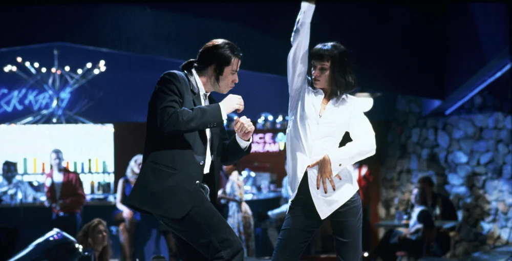

FILM GUIDE / 2 MIN READHow to notice colour in films
A simple viewing guide using Pulp Fiction as a starting point.
Read articleAN INDEPENDENT CINEMA JOURNAL / ISSUE 001
Three short guides to film colour, locations and keeping your own movie journal.

FILM GUIDE / 2 MIN READA simple viewing guide using Pulp Fiction as a starting point.
Read article FILM GUIDE / 2 MIN READ
FILM GUIDE / 2 MIN READWhat to notice about streets, buildings and the places characters spend time.
Read article FILM GUIDE / 2 MIN READ
FILM GUIDE / 2 MIN READA practical way to record what you watch without turning it into homework.
Read article